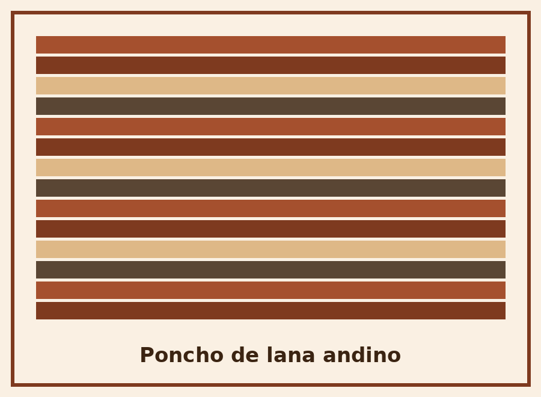
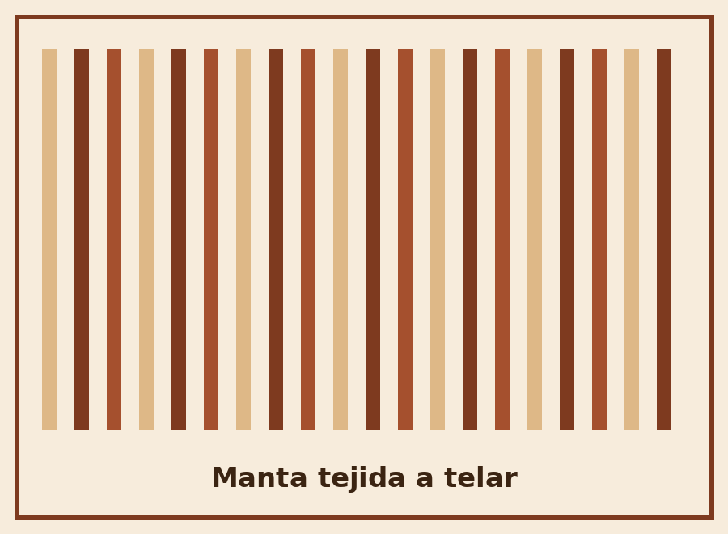
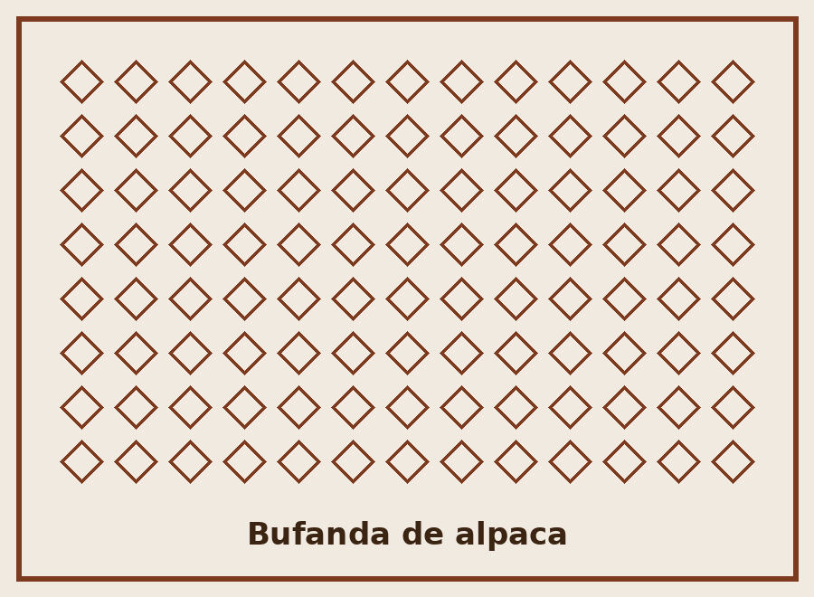
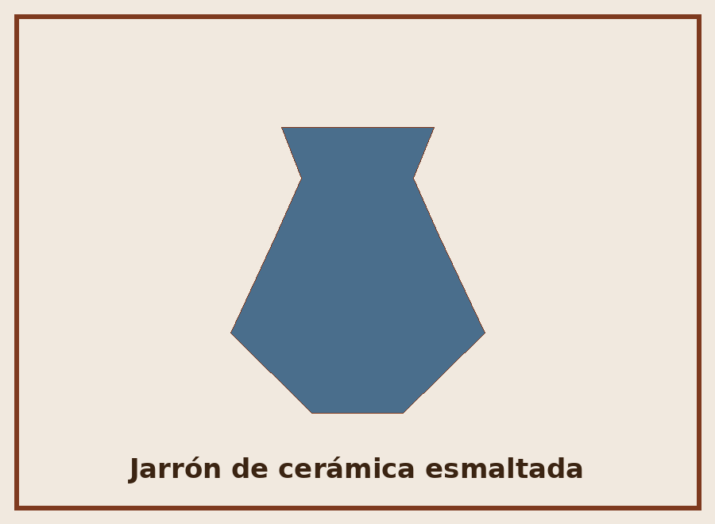
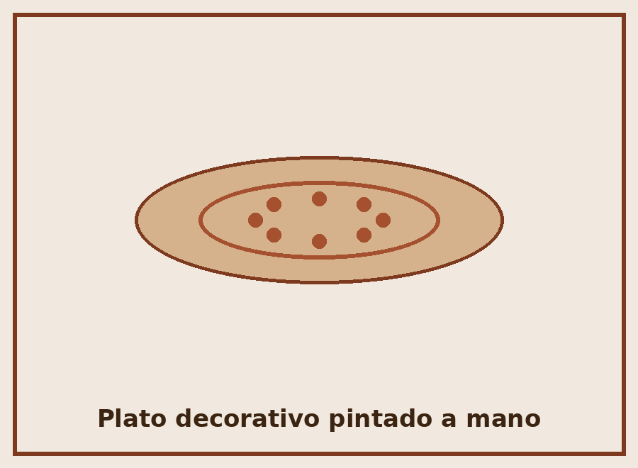
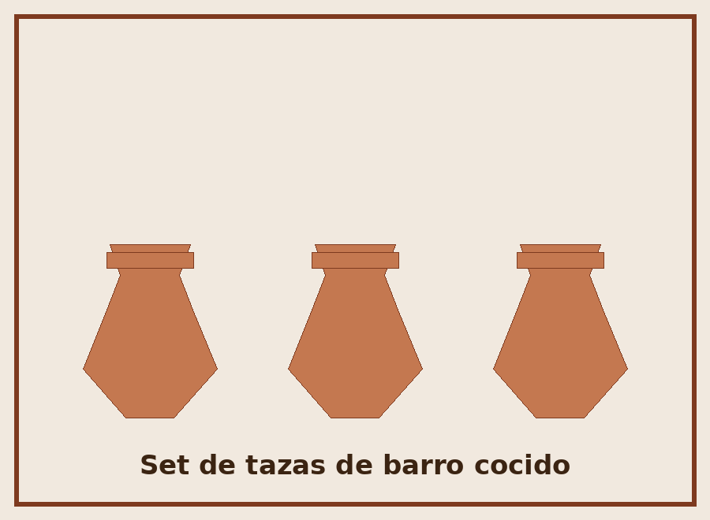
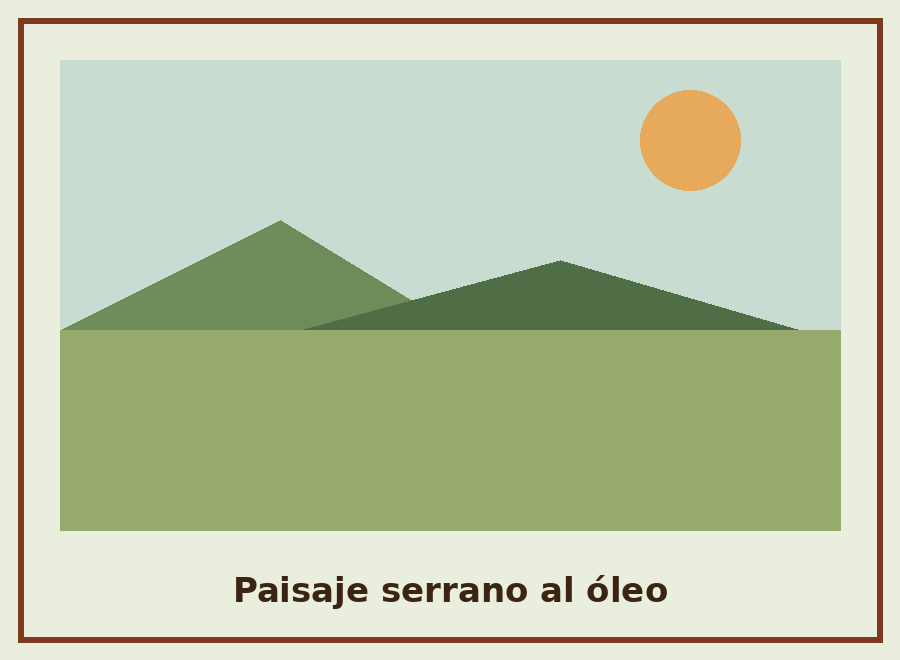
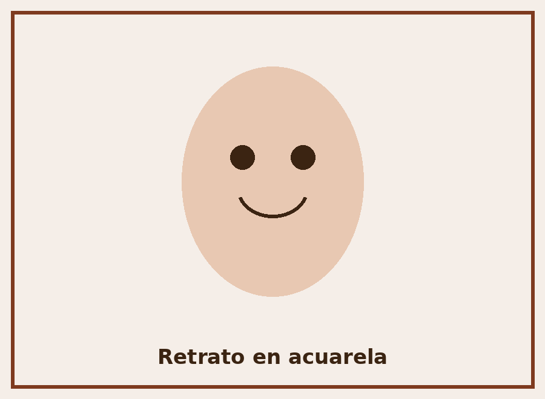
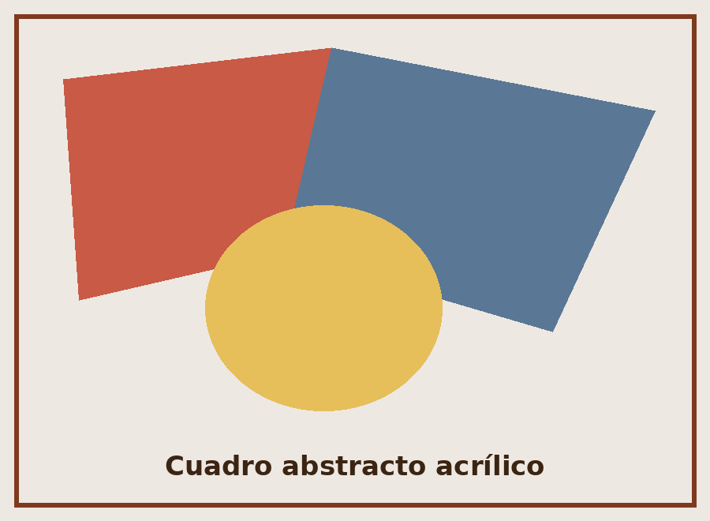

Poncho de lana andino
Tejido en telar de cintura con lana de oveja hilada a mano. Diseño geométrico tradicional.
$ 28.000
Más información sobre el poncho de lana andino (PDF)Manos de Barro y Lana
Descubrí tejidos, cerámicas y pinturas elaborados por artesanas y artesanos locales, pieza por pieza.
Filtrá los artículos por categoría:

Tejido en telar de cintura con lana de oveja hilada a mano. Diseño geométrico tradicional.
$ 28.000
Más información sobre el poncho de lana andino (PDF)
Manta de algodón y lana, tejida en telar tradicional con motivos de rayas multicolor.
$ 22.500
Más información sobre la manta tejida a telar (PDF)
Bufanda suave de fibra de alpaca 100% natural, ideal para el invierno.
$ 15.000
Más información sobre la bufanda de alpaca (PDF)
Jarrón torneado a mano y esmaltado en horno de leña. Pieza única.
$ 19.900
Más información sobre el jarrón de cerámica esmaltada (PDF)
Plato de cerámica pintado con óxidos naturales, apto solo para decoración.
$ 12.300
Más información sobre el plato decorativo (PDF)
Juego de tres tazas de barro cocido, cada una con un acabado ligeramente distinto.
$ 17.000
Más información sobre el set de tazas de barro (PDF)
Óleo sobre lienzo de 40x50 cm que retrata las sierras al atardecer.
$ 35.000
Más información sobre el paisaje serrano al óleo (PDF)
Retrato realizado con acuarelas sobre papel de algodón de 300 g.
$ 24.800
Más información sobre el retrato en acuarela (PDF)
Composición abstracta en acrílico sobre bastidor, técnica de espátula.
$ 30.200
Más información sobre el cuadro abstracto acrílico (PDF)Este sitio es mantenido por Cooperativa Manos de Barro y Lana, un grupo de artesanas y artesanos dedicado a difundir y vender técnicas tradicionales de tejido, alfarería y pintura.
Cada artículo que ofrecemos es elaborado de forma artesanal, en pequeños lotes, respetando los tiempos y procesos de cada oficio.
¿Tenés una consulta sobre algún artículo? Escribinos y te respondemos a la brevedad.